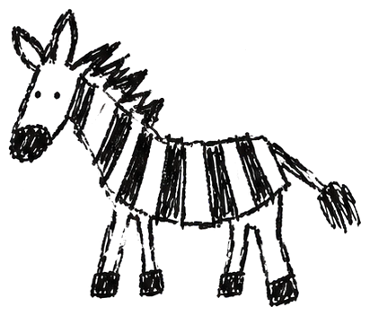
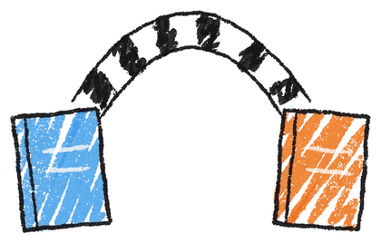

독서 취향 분석표
영역마다 해당 문항의 평균을 100점으로 바꿨어요
낮음 0~39 · 보통 40~74 · 높음 75~100
점수가 높을수록 그 방향의 작품에 끌리는 편이에요.

잇다 홈 @itda.pagesITDA READING TEST

현재의 독서 습관과 취향을 기준으로
솔직하게 답해 보세요.
키보드 숫자 1~5로도 답할 수 있어요
RESULT
영역마다 해당 문항의 평균을 100점으로 바꿨어요
낮음 0~39 · 보통 40~74 · 높음 75~100
점수가 높을수록 그 방향의 작품에 끌리는 편이에요.